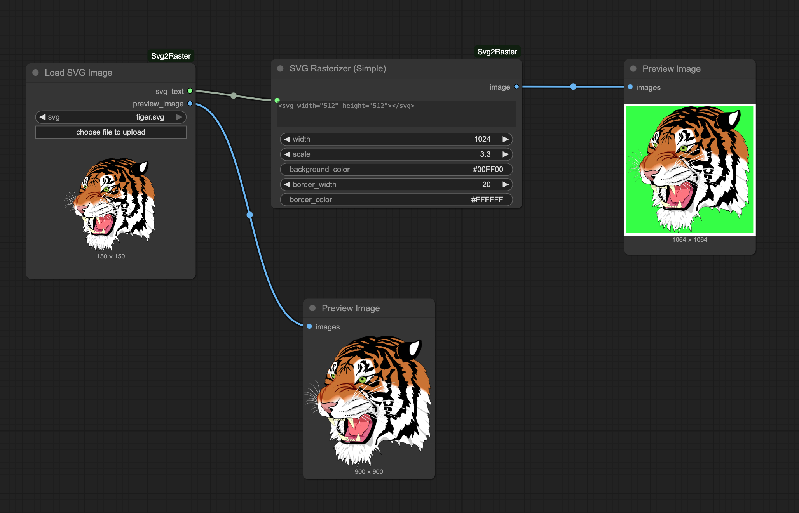

A Guide to Building Custom Nodes in ComfyUI
ComfyUI is by far my favorite open-source software right now. Its intuitive node-based interface has transformed the way we build AI image and video generation workflows.
What I really appreciate about ComfyUI is its flexibility. You can easily extend it with your own custom nodes. Here, I’ll show you how to create custom nodes that let you add exactly the tools you need. I’ll use parts from my Svg2Raster nodes as the running example for this purpose.
Svg2Raster
ComfyUI does not natively support vector graphics like SVGs. I often work with them and needed lightweight nodes to load (SVG->JPEGs/PNGs) and manipulate SVGs in ComfyUI.
Thus, I built Svg2Raster, a small custom node package that makes it easy to use SVGs with other nodes. 
Writing your Custom ComfyUI Node
So here I am assuming that you are fairly comfortable using ComfyUI and you already have ComfyUI installed locally on your system/cloud instance.
Step 1: Validate the core logic first
I prefer not to start with the ComfyUI node API. First, I like to write a simple Python notebook to test the functionalities I actually need. This validates your core code logic and packages in isolation.
In my case, I needed a way to read, rasterize and manipulate the SVGs. Thus, I tested all the relevant operations using the core packages CairoSVG and Pillow.
For example:
# Simple SVG read and conversion check
import cairosvg
from PIL import Image, ImageOps
import io
# Read SVG file
with open('logo.svg', 'r', encoding='utf-8') as f:
svg_text = f.read()
# Basic conversion to PNG
img_bytes = cairosvg.svg2png(bytestring=svg_text.encode('utf-8'),
output_width=600)
img = Image.open(io.BytesIO(img_bytes)).convert('RGBA')
print(f"Image size: {img.size}")If you want to see all the code snippets (width/height controls, color and border manipulations etc.), please check out the full notebook.
Once you have a working standalone script or code, wrapping it as a ComfyUI node is mostly boilerplate.
Step 2: Understand the Anatomy of a Custom Node
Every ComfyUI node is a Python class with specific methods that ComfyUI expects. Here are the essential components:
| Component | Description |
|---|---|
INPUT_TYPES |
What inputs your node accepts |
RETURN_TYPES |
What it outputs to other nodes |
RETURN_NAMES |
Optional labels for outputs |
FUNCTION |
The method name that runs your logic |
CATEGORY |
Where it appears in ComfyUI’s node menu |
ComfyUI handles the rest of UI, connections and execution order. For example, this is how a simple custom node class will looks like:
class LoadSVG:
@classmethod
def INPUT_TYPES(cls):
return {
"required": {
"svg_file": ("STRING", {"default": "file.svg"}),
}
}
RETURN_TYPES = ("IMAGE", "STRING")
RETURN_NAMES = ("image", "svg_text")
FUNCTION = "load_svg"
CATEGORY = "Svg2Raster"
def load_svg(self, svg_file):
# Your actual logic here
return (image_tensor, svg_text)This is a minimal ComfyUI node class explanation that I believe is good enough to start writing your own nodes. If you want more details, check the official ComfyUI custom node documentation.
Step 3: Implementing the LoadSVGImage Node
First, I set up the file structure in ComfyUI’s custom_nodes folder for my nodes package:
cd ComfyUI/custom_nodes
mkdir svg2raster
cd svg2rasterThen I create two essential files:
__init__.py: it allows ComfyUI to import your custom nodes.
from .svg2raster_node import *
__all__ = [ "NODE_CLASS_MAPPINGS",
"NODE_DISPLAY_NAME_MAPPINGS"]svg2raster_node.py: this is where the actual nodes code is written.
You can find the complete code for these nodes here: svg2raster_node.py. Here’s the boilerplate structure of LoadSVGImage node:
class LoadSVGImage:
@classmethod
def INPUT_TYPES(cls):
"""Define what inputs this node accepts"""
# Use `folder_paths` to access ComfyUI's input directory
input_dir = folder_paths.get_input_directory()
files = [f for f in os.listdir(input_dir) if os.path.isfile(os.path.join(input_dir, f)) and f.lower().endswith('.svg')]
return {
"required": {
"svg": (sorted(files), {"image_upload": True}),
}
}
# Output configuration
RETURN_TYPES = ("STRING", "IMAGE")
RETURN_NAMES = ("svg_text", "preview_image")
FUNCTION = "load_svg" # Method name to execute
CATEGORY = "FromSVG/Tools" # Menu location
def load_svg(self, svg, background="#FFFFFF"):
"""Main execution method - does the actual work"""
# Your logic here
return (svg_text, image_tensor)
@classmethod
def IS_CHANGED(cls, svg):
# Returns file hash or modification time
pass
@classmethod
def VALIDATE_INPUTS(cls, svg):
# Check if file exists, return error string if invalid
return TrueHere, the helper methods serve crucial purposes: - IS_CHANGED: Tells ComfyUI when to re-execute the node - VALIDATE_INPUTS: Prevents crashes by validating inputs before execution
ComfyUI expects images as tensors in BHWC format (batch, height, width, channels) with values normalized to 0-1. Thus, you need to have a pil to tensor function.
def _pil_to_tensor(pil_img: Image.Image):
"""Convert PIL image to ComfyUI IMAGE tensor: (B, H, W, C) in [0,1]"""
# conversion logicFinally, you need the mappings for ComfyUI to discover your nodes:
NODE_CLASS_MAPPINGS = {
"LoadSVGImage": LoadSVGImage,
}
NODE_DISPLAY_NAME_MAPPINGS = {
"LoadSVGImage": "Load SVG Image",
}Without these mappings, ComfyUI won’t find your nodes even if the code is correct.
Similarly, I also wrote a RasterizeSVG class for manipulating the loaded SVG. It takes the SVG text from LoadSVGImage and lets you adjust scale, dimensions, borders, and more. You will see the pattern is identical: define inputs, process with CairoSVG/PIL, convert to tensor, return.
That’s how you implement a node. Write a standalone functionality script, wrap it in the ComfyUI class structure, handle the tensor conversions, add the helper methods, and register it with the mappings.
Step 4: Testing Your Custom Node in ComfyUI
Once you are done implementing, testing is straightforward.
- Ensure all your dependencies are installed, including
CairoSVG: - Restart ComfyUI for it to detect the new node.
- Find your nodes under the defined category
Note: I have also added the installation steps here.
Step 5: Sharing and Publishing Your Node
Once everything worked, I created a GitHub repo for the nodes. You can see how I structured mine in the Svg2Raster repo.
Some Essential files in the repo are:
| File | Description |
|---|---|
| README.md | Clear installation instructions and usage examples |
| requirements.txt | Python dependencies (cairosvg in my case) |
| pyproject.toml | Required if you plan to publish to ComfyUI Registry |
| examples/ | Optional Sample SVG files and workflow JSON files |
Note: Having a good Readme and examples makes a huge difference for users trying to understand and use your nodes.
Once your repo is ready, you can even publish it to the ComfyUI Registry. There’s an excellent guide on publishing to ComfyUI Registry - just follow those steps.
I also set up a GitHub Actions workflow that automatically publishes updates to the ComfyUI Registry whenever I push changes to my repo. This ensures the registry always has the latest version. You can check out my workflow file to see how I did it.